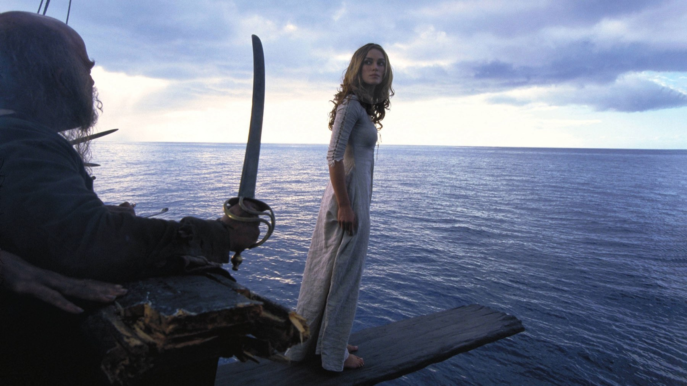
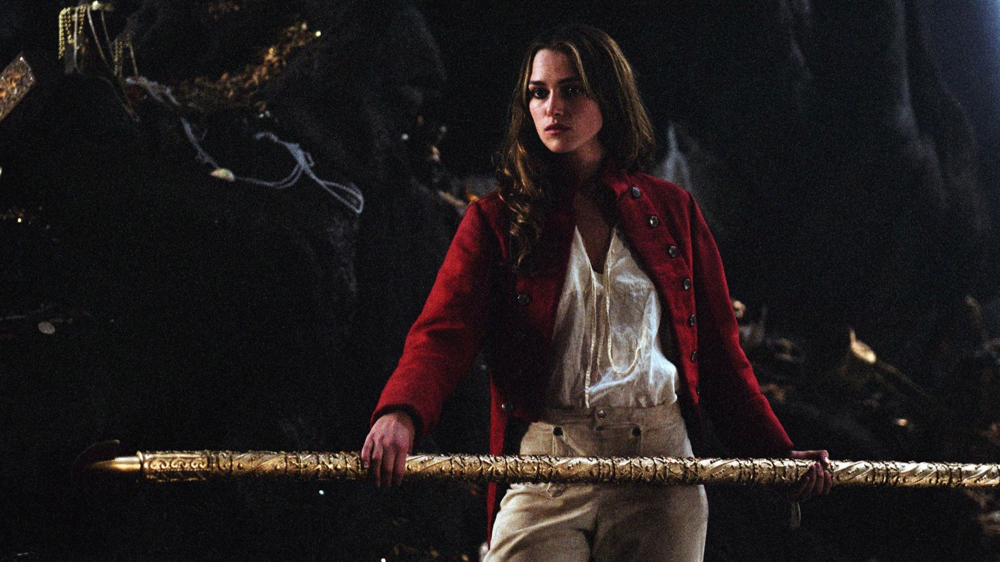

Pirati dei Caraibi: 7 curiosità su Jack Sparrow
Un ruolo scritto per Hugh Jackman e un padre che è il modello stesso del figlio
Il Jack Sparrow di La maledizione della prima luna, uscito in Italia il 5 settembre 2003, oggi sembra inevitabile. Eppure nacque quasi per caso: ci furono attori scartati e un chitarrista dei Rolling Stones come modello, mentre lo studio temeva di aver sbagliato tutto. Ecco sette retroscena sul personaggio e su chi lo rese possibile.
Era stato scritto per Hugh Jackman
Lo sceneggiatore Stuart Beattie ha raccontato di aver scritto Sparrow pensando a Hugh Jackman. L'attore australiano però era poco noto fuori dal suo paese, quindi il ruolo passò a Johnny Depp, scritturato il 10 giugno 2002. Lo studio aveva valutato anche Jim Carrey, fermato dagli impegni con Una settimana da Dio, oltre a Michael Keaton e Christopher Walken. Il produttore Jerry Bruckheimer immaginava all'inizio un giovane Burt Lancaster, un pirata spavaldo e nient'altro, mentre Ted Elliott e Terry Rossio lo pensavano come un personaggio di supporto sul modello di Bugs Bunny e Groucho Marx. È l'idea più vicina al risultato, perché Sparrow non è l'eroe del film: entra, ruba la scena e poi la lascia agli altri.

Il modello è un chitarrista dei Rolling Stones
Depp costruì Sparrow su Keith Richards, dopo aver notato somiglianze tra i pirati del Settecento e le rock star di oggi. La pagina italiana dedicata al personaggio aggiunge un dettaglio che si nota rivedendo il film: il movimento delle mani richiama Tuco di Il buono, il brutto, il cattivo. Non è quindi un'imitazione sola, ma un insieme di riferimenti che vanno da una rock star a un bandito western, perciò Sparrow non somiglia a nessun pirata visto prima al cinema.
Nacque in una sauna, tra i cartoni animati
Depp raccontò che Captain Jack nacque in una sauna, la sua, dove preparò il personaggio. Per trovare il tono giusto guardò anche molti cartoni animati, con Tex Avery e Wile E. Coyote tra gli esempi, perché sua figlia Lily-Rose aveva allora tre anni. Si capisce meglio così il passo da caricatura che attraversa tutto il film, perché Sparrow è pensato per muoversi come un personaggio dei cartoni dentro un'avventura in carne e ossa.
Lo studio pensava che rovinasse il film
Guardando i giornalieri, i dirigenti Disney rimasero perplessi e si chiesero se Sparrow fosse ubriaco. Secondo il racconto riportato dalla pagina del personaggio, l'allora capo della Disney Michael Eisner dichiarò che Depp stava rovinando il film. L'attore rispose, in sostanza, che potevano fidarsi delle sue scelte oppure lasciarlo andare, e non lo lasciarono andare. L'esito fu una candidatura all'Oscar per l'interpretazione, più le candidature a BAFTA e Golden Globe e uno Screen Actors Guild Award vinto: lo studio aveva visto un errore dove c'era il personaggio più copiato della saga.

L'ultima battuta è improvvisata
Il film si chiude con Sparrow che chiede di portargli l'orizzonte, e la frase è un'improvvisazione di Depp: la pagina del personaggio ricorda che uno degli sceneggiatori la indica come la sua battuta preferita. In italiano Sparrow ha la voce di Fabio Boccanera, perciò chi rivede il film doppiato ascolta una chiusa che nasce da un'invenzione sul set.
Il padre di Jack è il suo modello
Il cerchio si chiude con un cameo. Keith Richards interpreta il capitano Teague, padre di Jack, in Ai confini del mondo del 2007 e in Oltre i confini del mare del 2011. Depp ha sempre detto di essersi ispirato a lui e non ha mai nascosto l'amicizia che li lega. La trovata ha senso solo conoscendo l'origine del personaggio: il figlio è nato dal chitarrista, ma ora lo ritrova come padre sullo schermo.
La maledizione viene da un'attrazione
Il punto di partenza fu l'attrazione dei parchi Disney, quindi Elliott e Rossio aggiunsero la maledizione al copione proprio per avvicinare la storia a quella giostra. Le riprese durarono da ottobre 2002 a marzo 2003, a Saint Vincent e Grenadine e in studio a Los Angeles. Il risultato è un pirata comico dentro una storia di fantasmi, ma è proprio quel contrasto a far funzionare il film.
Se i retroscena vi incuriosiscono, leggete anche Full Metal Jacket, sull'istruttore che si scrisse le battute, Shrek, sulle battute che da bambini non capivamo, e Le follie dell'imperatore, sul film nato da un disastro.
Sparrow funziona perché nessuno lo voleva così: lo studio cercava un eroe, Depp portò una rock star con i modi di un cartone animato. Il film è su Disney Plus. Quale di questi retroscena non conoscevate?
Domande frequenti
Su chi è basato Jack Sparrow?
Johnny Depp lo costruì su Keith Richards, chitarrista dei Rolling Stones, dopo aver notato somiglianze tra i pirati del Settecento e le rock star moderne.
Keith Richards è davvero nel film?
Sì: interpreta il capitano Teague, padre di Jack, in Ai confini del mondo (2007) e Oltre i confini del mare (2011).
Chi doppia Jack Sparrow in italiano?
La voce italiana di Jack Sparrow è Fabio Boccanera.
Dove si vede La maledizione della prima luna in Italia?
Su Disney Plus, con abbonamento; è disponibile anche a noleggio.